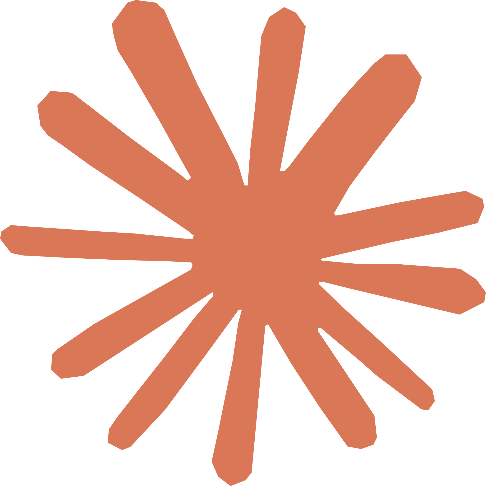
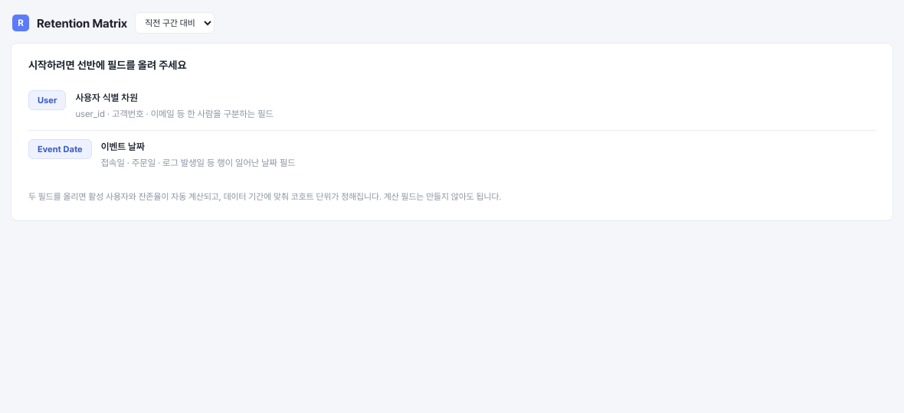

1.1 AI · 사람 · Tableau의 역할 분담
- 데이터 구조 파악
- 결측 · 이상치 초벌 점검
- EDA와 차트 초안
- 문서와 보고서 초안
- 분석 질문 정의
- 지표와 기준 확정
- 결과 해석
- 최종 의사결정
- 신뢰할 수 있는 데이터 모델
- 인터랙티브 탐색
- 권한과 거버넌스
- 배포 · 공유 · 구독
1.2 오늘 다룰 분석 워크플로우 전체 구조

KPI 초안 · 대시보드 시안
점검 · 질의 · 확장
공유 · 구독
1.3 AI가 대체하지 못하는 Tableau 플랫폼 계층
새로고침 · 보안 · 시맨틱 · 거버넌스
- 탐색과 초안
- 반복 산출물
- 변경 감지와 정리
- 권한 · 행 수준 보안
- 지표 · 시맨틱 모델
- 데이터 새로고침 · 배포 · Audit
- 정의와 기준
- 검증
- 최종 판단
2.6 모든 단계에 적용되는 분석 품질 원칙
모든 에이전트 공통 적용 · 7개 조항
1 · KPI 정의가 먼저 · 이름 · 계산 기준 · 단위 확정 후 분석
2 · 절대값 / 상대값 / 누적값 혼용 금지
3 · 차트는 질문에 답한다 · 예쁨보다 명확함
4 · 카드 제목은 결론형 또는 질문형
5 · 임원용 요약과 실무자용 상세 분리
6 · 표본이 작으면 반드시 경고
7 · 도메인 독립성 · 타 도메인 가정 강제 금지
공통 기준
7개 에이전트 전 단계 동일 적용 · 사람마다 다르던 기준의 문서화
2.10 각 단계가 남기는 산출물
@eda · 분포 · 관계 탐색
발견 1 · Furniture가 매출 3위인데 마진 10.7%
Technology 34.6% · Office Supplies 36.7%와 3배 차이 · 할인율 최대 21%가 마진 잠식
발견 2 · B그룹이 전환율 +1.1%p, 매출 +$11,190
A 12.0% / AOV $122 · B 13.1% / AOV $120 · 할인 효과 가능성
발견 3 · 2월 정점 $164K → 3월 $114K (-31%)
마진은 29.3% → 31.7% 회복 · 단순 물량 감소 · 계절성 확인 필요
| 총 매출 | 총 이익 | 마진 | 전환율 | AOV |
|---|---|---|---|---|
| $397,130 | $121,460 | 30.6% | 12.6% | $121 |
→ @problem: 마진 원인 · A/B 유의성 · 3월 급락 구조 확인 요청
EDA 요약
발견 3 · KPI 스냅샷
2.10 각 단계가 남기는 산출물
@metrics · 지표 계산식 확정
| KPI | 계산식 | 현재값 |
|---|---|---|
| 총 매출 | SUM(revenue) | $397,130 |
| 총 이익 | SUM(revenue - cost) | $121,460 |
| 전체 마진율 | Gross Profit / Gross Revenue | 30.6% |
| 전환율 (CVR) | orders / visitors | 12.6% |
| 평균 주문액 | revenue / orders | $121 |
| A/B 전환율 차이 | B - A · %p 절대값 | +1.1%p |
카테고리별 Technology 매출 52.1% · 마진 35.0% · 할인 6.0% / Office 28.4% · 36.4% · 4.8% / Furniture 19.4% · 10.7% · 17.7%
단위 · 분모 · 제외 조건 고정 → 이후 전 단계와 Tableau 계산 필드의 기준
KPI 정의
이름 · 계산식 · 분모 · 단위
2.10 각 단계가 남기는 산출물
@dashboard · 시각화 시안
대시보드 시안
차트 선택 · 레이아웃 · KPI 카드
Tableau MCP
사용자 권한 · 접근 범위 · 읽기 중심 데모
Retention Matrix
샘플 CSV 연결 → .trex 추가 → 선반 2개 · Tableau Desktop 2024.2+
- User · Event Date
- 주간 코호트
- LOD 불필요
- HTML · JS · .trex
